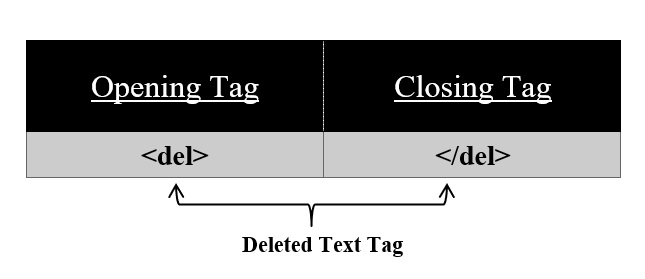

For deleted text use <del> tag on your HTML page.
Syntax:
<del>
//content
</del>
Using this <del> tag we can delete our text from a document. All the content in between this tag appears to be displayed with a strike line. <del> tag has also its corresponding </del> tag.